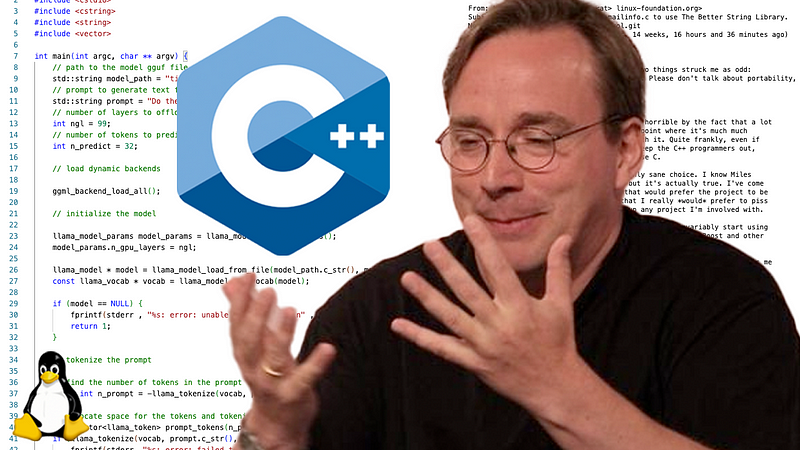

Список терминов

Основные термины, связанные с деятельностью Линуса Торвальдса
В этом разделе собраны основные понятия и инструменты, неразрывно связанные с деятельностью Линуса Торвальдса и миром современной разработки.
- Ядро Linux (Linux Kernel)
- Главный компонент операционной системы, который Линус начал писать в . Ядро управляет «железом» компьютера (процессором, памятью) и написано на языке программирования
C. На нем работают серверы, суперкомпьютеры и Android. - Git
- Распределенная система контроля версий, созданная Торвальдсом в . Она позволяет разработчикам управлять историей кода, использовать ветвление
линейную записьи вводить команды вроде git commit для сохранения правок. - Open Source (Открытый исходный код)
- Модель разработки ПО, популяризатором которой стал Линус. Как отмечают эксперты,
открытый код меняет саму философию создания программ
(из истории IT-индустрии). - Система контроля версий (VCS)
- Класс программного обеспечения для отслеживания изменений в исходном коде. Ярчайшим и самым популярным представителем является созданный Торвальдсом Git.
- GitHub и GitLab
- Облачные веб-платформы для хостинга IT-проектов, построенные поверх инструмента Git. Они стали главными платформами для совместной работы разработчиков со всего мира.